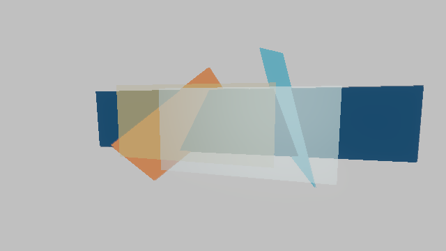
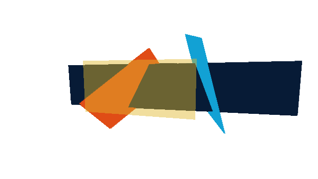
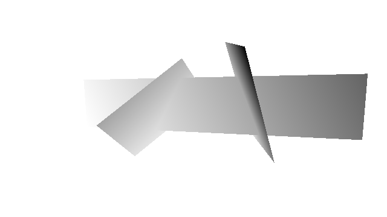

suite: transparency generated: 2026-06-27T19:27:50Z
| Target | Status | Preview | Diff |
|---|---|---|---|
| final_color | captured capture_written |  | |
| transmission_feedback | captured capture_written |  | |
| transmission_visibility_depth | captured capture_written |  |
| ID | Metric | Status | Actual |
|---|---|---|---|
| transmission_feedback_refresh | renderer.aa.transparent_transmission_feedback_refreshes | pass passed | 1 |